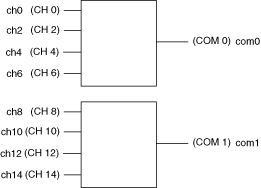
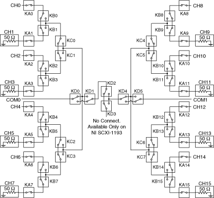

The following figure represents the NI PXI/PXIe-2593 (NI 2593) dual 4×1 terminated multiplexer topology.
|  |
|
The following figure shows the reset position of the NI 2593 in the dual 4×1 terminated multiplexer topology.

For proper termination, connect an external terminator, such as the NI 50 Ω MCX terminator (778831-01), to every odd channel. Any input channel not connected to the COM is routed back to its associated termination channel.
The NI 2593 in this topology contains two banks of four input channels connected to a common channel. These input channels are the even channels from channel 0 to channel 14. The two common channels are referred to as com0 and com1. You can only connect to the common channel that is in the same bank. The banks are organized as follows:
| Input Channels | Common Channel |
|---|---|
| ch0, ch2, ch4, ch6, | com0 |
| ch8, ch10, ch12, ch14 | com1 |
For example, you can connect ch6 to com0; however, you cannot connect ch6 to com1 in this topology.
You can connect the channels of the NI 2593 using the niSwitch Connect Channels VI or the niSwitch_Connect function. For example, to connect channel 14 to common 1, call the niSwitch Connect Channels VI or the niSwitch_Connect function with the channel 1 parameter set to ch14 and the channel 2 parameter set to com1.
When scanning the NI 2593, a typical scan list entry could be ch2->com0;. This disconnects ch2 from its termination and route it to com0.